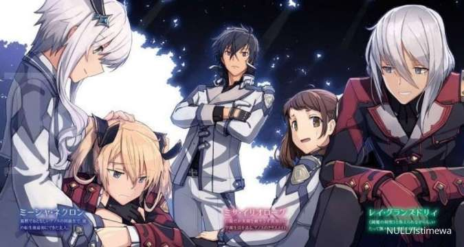

|  | ||||
Karakter |
Sipnosis
Setelah 2000 tahun berlalu, raja iblis yang dulunya kejam direinkarnasi kembali.
|
InformasiTipe : TV Episode : 13 Status : Telah Tayang Tayang : 4 Juli 2020 sampai 26 September 2020 Perdana : Summer 2020 Produser : Aniplex Lisensor : Aniplex of America Studio : Silver Link. |
Maou Gakuin no Futekigousha merupakan seri light novel Jepang yang ditulis oleh Shu
|
|